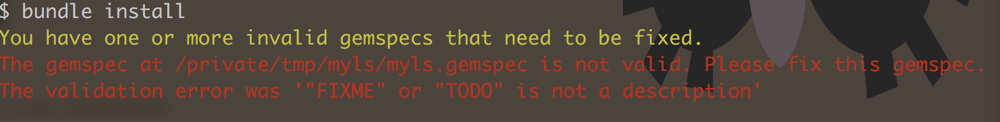

0x02 编写第一个 Ruby gem
名词解释
什么是 gem
每种语言都有自己的包管理工具，比如 JavaScript 使用 yarn/npm，Python 使用 pip 等等
Ruby 的包管理工具是 gem。一个 gem 相当于一个包含 ruby 代码的包，比如我们熟知的 CocoaPods 就是一个 gem
gemspec
写过 podspec 就一定知道什么是 gemspec，它就是一坨 Ruby 代码，用于描述 gem 的名字，依赖关系等等
通过查看 CocoaPods 的 gemspec 我们可以知道，它依赖 claide，xcodeproj 等 gem
什么是 bundler
bundler 是用来管理项目 gem 依赖的。通过它提供的一系列命令， 可以很轻松地对包含 Gemfile 的项目进行 gem 的安装，更新
或者通过 bundle gem $NAME 创建一个新的 gem
编写第一个 gem
下面我们通过一个简单的栗子，来实践一下如何通过 Ruby gem 创建一个简单的 CLI
这个命令实现的功能类似于 *nix 中的 ls，打印出当前目录的所有文件
创建 gem
把这个命令起名为 myls，通过执行 bundle gem --bin myls 创建出整个 gem 的结构，–bin 参数会让 bundler 自动创建一个与 gem name 同名的命令

安装依赖
bundler 生成的项目默认会带有几个 development 依赖，可以通过 bundle install 来安装这些依赖
但在这之前，需要将 myls.gemspec 中的 TODO 都删掉，homepage 改为正确的 URL 比如 https://zhihu.com 不然会出现下面的错误

下面是修改完成后执行 bundle install 的输出，

编写代码
需要关注的文件有，
exe/myls此文件作为myls命令的入口，在命令行执行myls时，此文件会被执行lib/myls.rb真正实现myls命令的地方
在 lib/myls.rb 中编写如下的代码，就是简单地使用 Dir.glob 方法输出当前文件夹下的所有文件
1 2 3 4 5 6 7 | require "myls/version" module Myls def self.ls puts Dir.glob '*' end end |
然后跳到 exe/myls 文件中，调用该方法，
1 2 3 4 5 6 | #!/usr/bin/env ruby # 这里 require 的是 `lib/myls(.rb)` require "myls" Myls.ls |
至此，我们简单版本的 ls 已经完成了
怎么样，是不是很简单
安装
在编写完成后，通过 rake install 安装编写好的 gem 到本地的电脑中

然后继续输入命令 myls 就可以看到我们刚刚编写好的代码产生的效果啦，😍

卸载
gem uninstall myks